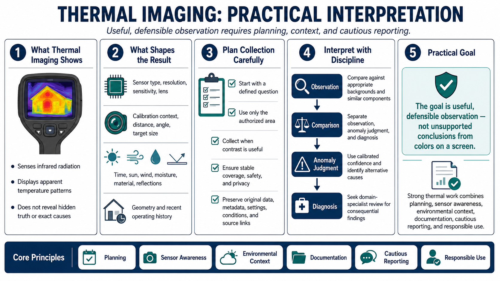

Course Summary and Key Takeaways
Connecting to LMS... Progress: in progress

Narration
Thermal imaging senses infrared radiation and displays apparent temperature patterns. It does not reveal hidden truth, identify exact causes, or operate like a visible-light photograph.
Useful work depends on sensor type, resolution, sensitivity, lens, calibration context, distance, angle, target size, and environmental conditions. Time, sun, wind, moisture, material, reflections, geometry, and recent operating history can change the scene.
Plan collection around a defined question, authorized area, useful contrast, stable coverage, safety, and privacy. Preserve original data, metadata, settings, conditions, and source links.
Interpret patterns against appropriate backgrounds and comparable components. Separate observation, anomaly judgment, and diagnosis. Use calibrated confidence, identify alternative causes, and seek domain-specialist review for consequential findings.
The goal is useful, defensible observation, not unsupported conclusions from colors on a screen. Strong thermal work combines planning, sensor awareness, environmental context, documentation, cautious reporting, and responsible use.